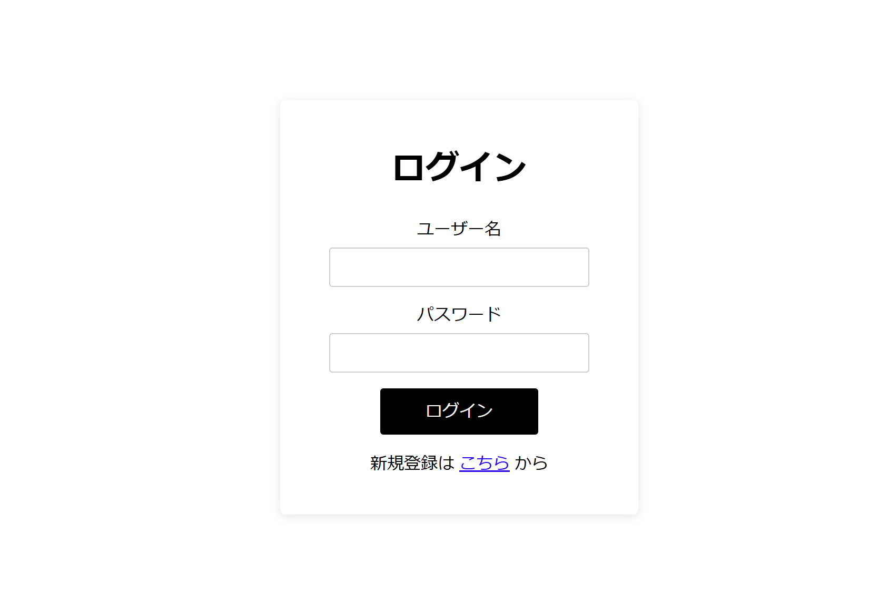
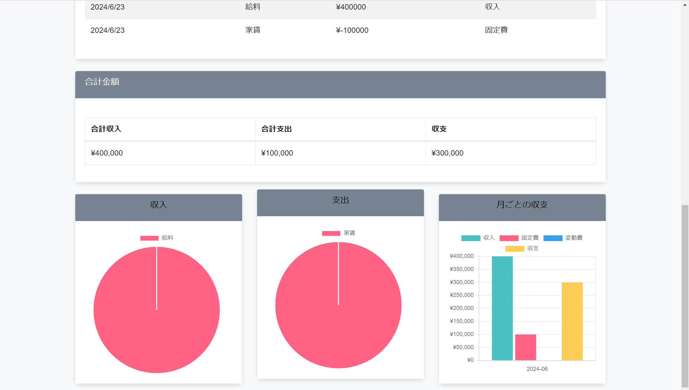

このアプリケーション「銭カメ帳」はハッカソン出場時に大学の同期と協力し作成したものである。
本プログラムは、ユーザーが収入や支出を簡単に記録し、分析できることを目的としている。
本プログラムでは、ユーザーが入力した収支データを管理する。データは以下の形式で扱われる:
収入/支出データ: JSON形式で、収入や支出の項目名、金額、日付、タイプ（固定費、変動費、収入）などを記録する。
認証データ: JWT（JSON Web Token）形式で、ユーザー認証を行う。
3.1 実装した機能
ユーザー登録: 新規ユーザーがアカウントを作成する機能。
ユーザーログイン: 既存ユーザーがアカウントにログインする機能。

収支追加: ユーザーが収入や支出を追加する機能。
データ表示: 記録された収支データを表形式で表示する機能。
データ分析: 記録されたデータを基に、収支のグラフを表示する機能。

3.2 システムが利用するリソース
名称: ユーザー情報データベース
概要: ユーザーの認証情報（ユーザー名、パスワード）を保存する。
利用目的: ユーザー認証のため。
形式: PostgreSQL
名称: 収支データデータベース
概要: ユーザーの収入や支出のデータを保存する。
利用目的: 収支管理のため。
形式: PostgreSQL
3.3 プログラムの構造
プログラムは以下のファイルで構成されている。
app.js: クライアントサイドのJavaScriptファイル。ユーザーインターフェースの制御を行う。
login.js: ログインページ用のJavaScriptファイル。
register.js: 新規登録ページ用のJavaScriptファイル。
server.js: サーバーサイドのNode.jsファイル。ユーザー認証やデータベースとの通信を管理する。
public/: 静的ファイル（HTML、CSS、画像など）を格納するディレクトリ。
3.4 工夫点:
ユーザーインターフェースの工夫: Bootstrapを用いてレスポンシブなデザインを実現。
エラーハンドリング: クライアントおよびサーバーサイドで適切なエラーハンドリングを行い、ユーザーに分かりやすいメッセージを表示。